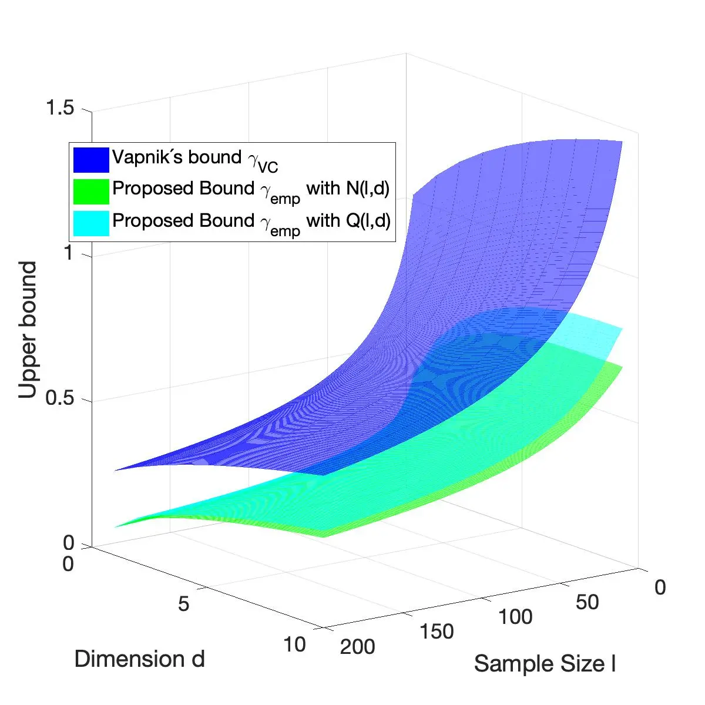

What is SAM?
SAM (Statistical Agnostic Mapping) is a framework based on statistical learning theory (SLT) that provides similar activation maps than the ones obtained by the voxel-wise SPM, but defined on ROIs, under a rigorous development in scenarios with a small sample/dimension ratio and large, small and trivial effect sizes.
The present methodology seeks to solve the problems related to classical inference that are observed in neuroscience. Although statistical inference based on a null hypothesis has been used predominantly for exploratory analyses in brain studies (for example, using tools like SPM, AFNI or FSL), recent research maintains that this procedure produces a high number of false positives because data from most of these studies do not meet the model’s assumptions. In this context, SAM allows the creation of significance maps in the study of a certain condition or neurological pathology from the information contained in brain imaging regions of interest, using multivariate approaches based on automatic learning.
Some comments from our reviewers
From your point of view, what is SAM?
SAM is an alternative method to classic statistical inference in neuroimaging. Specifically, it tries to address a few thorny points about multiple comparison correction through family-wise error rate (FWER) control and the link between sample size and sensitivity of the test. The approach proposed relies on a region-wise machine learning technique and the calculation of error bounds on classification accuracy.
The recent publication by Gorriz et al. introduces this alternative strategy to estimate group-level or second-level activation maps without employing multiple testing correction to control for family-wise error rates or false discovery rates. One can ask whether voxel level activation statistics at the individual subject level generalize at the population level through a test statistic that captures prevalence of activation within the study population. The paper develops such a prevalence-like nonparametric test statistic, not based on prevalence of activation but that of classification error. It utilizes analytical lower and upper bounds on error inspired by empirical risk minimization and concentration of measure theory without specifying a null distribution. Then statistical significance testing according to this new test statistic automatically provides a group-level activation map.
What do you think about the potential use of SAM?
The method proposed is interesting and its emphasis on using population proportion or prevalence of classifier error in predicting task conditions is important. While different from other types of activation prevalence statistics in the literature, such methods are generally underutilized in the field. The empirical results look promising…
Personally, I think the method is a very important addition to the field…
What do you think about the other models that can be employed thanks to the flexibility of the GLM-SPM approach?
SAM is an alternative method for performing group comparisons. Indeed, GLM could be used as well in this framework.
Up to now, SAM is more focused on group comparisons that perform binary classification but the multiclass problem in ML can also be solved by the use of binary comparisons in Error-correcting output codes (ECOC) which represents a powerful framework to deal with multiclass classification problems.
How would factorial designs be handled?
Factorial designs could be managed as well by preparing the binary groups (by properly –multi– labeling the effects we want to measure) that are behind these studies. In this context, the output class could be a set of variables quantifying such specific state of responses.
In the future users will explore these configurations to extend SAM into more complex scenarios. At this stage of the development, SAM is more focused on the experimental settings used in many applications found in the extant literature.
What about the inclusion of regressors to model out nuisance effects?
Combination of ML in addition to FES is robust against outliers. Thus, the idea of correcting effects by linear models is discarded in this sense, although it could be incorporated in the methods as a preprocessing step.
Is SAM dependent on the predefined atlas?
SAM is based on Machine Learning using feature extraction and selection and linear decision functions. The method does not depend on the selected atlas as long as the regions taken for the analysis are large enough to take advantage of this multivariate approach. Multivariate approaches using ML can detect differences in regions using a kind of two-tailed test which is particularly valuable when brain responses are modeled by a series of functions (regressors or predictors) for which no specific contrasts can be used.
Is SAM dependent of the Feature Extraction and Selection (FES) scheme?
Sure, FES is used as a pre-processing method to transform raw data into features. Any FES scheme (ICA, PLS PCA or even deep learning for FE) could be used to provide a low dimensional space where SAM works. The inference provided by SAM is referred to that feature space.
Conclusions summary
The value of the SAM is in the link to the activation prevalence literature by means of a theoretical approach based on concentration inequalities. Previous works have already made it clear that prevalence of activation in the group is a valuable quantity, one that has more ecological validity since it ensures prevalent activation implies that activation could be found in the activation maps of individuals. This potentially has two benefits: i) helping frame the contribution of this work as a learning theory/risk minimization approach to prevalence estimation and ii) it results in an alternative to SPM, FSL or any empirical method for prevalence estimation.
Comparison between SPM and SAM
Try it out!
Start using SAM from our GitHub repository:
SAM has been created with MATLAB R2020b but it is compatible with any release:
https://www.mathworks.com/matlabcentral/fileexchange/80638-sam
Available soon for Python 3.x.
Bibliography
Find our works
Statistical Agnostic Mapping J.M. Gorriz, C. Jimenez-Mesa, R. Romero-Garcia, F. Segovia, J. Ramirez, D. Castillo-Barnes, F.J. Martinez-Murcia, A. Ortiz, D. Salas-Gonzalez, I.A. Illan, C.G. Puntonet, D. Lopez-Garcia, M. Gomez-Rio, J. Suckling, Statistical Agnostic Mapping: A framework in neuroimaging based on concentration inequalities, Information Fusion, Volume 66, 2021, Pages 198-212, ISSN 1566-2535